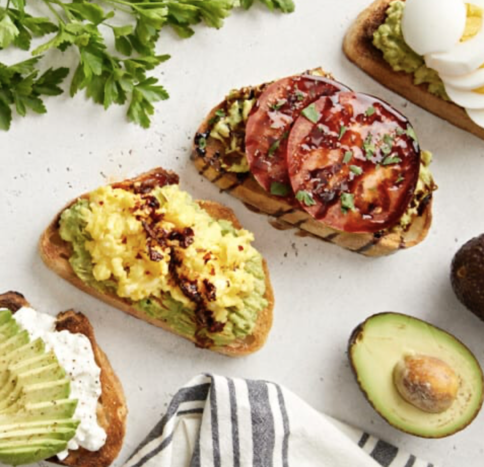

Avocado On Toast

Ingredients
- 1 teaspoon butter
- 2 eggs
- 2 slices bread
- 1 ripe avocado, pitted, peeled
- 1 teaspoon lemon juice, or to taste
- 1 pinch cayenne pepper
- sea salt to taste
- ground black pepper to taste
Instructions
- Melt butter in a skillet over medium-low heat. Crack eggs into the skillet side by side and cook until eggs are white on the bottom layer and firm enough to flip, 2 to 3 minutes. Flip eggs, trying not to crack the yolk, and cook until egg reaches desired doneness, 2 to 5 minutes more.
- Toast the bread
- Mash avocado in a bowl; stir in lemon juice, cayenne pepper, and sea salt. Spread avocado mixture onto toast. Top with fried egg and season with sea salt and pepper.
- Enjoy!